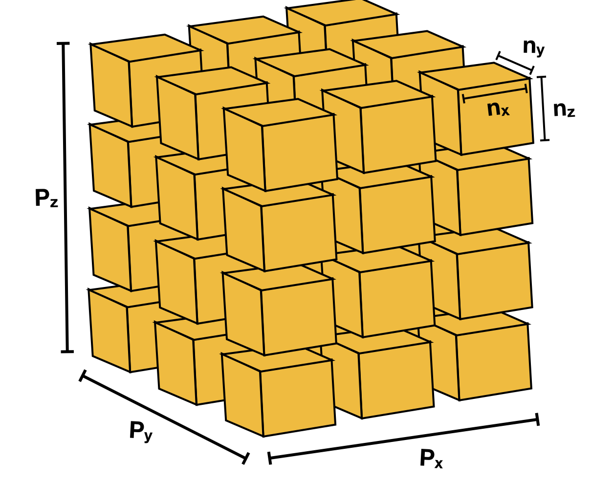

Domain Decomposition (lbpm_serial_decomp)¶
In order to perform simulations using large digital rock images, it is typically necessary to break the volumetric image into sub-regions so that different processing elements can operate on the data in parallel. This procedure is known as domain decomposition. In LBPM, the domain decomposition is performed using a regular process grid such that each processing element is assigned an equally-sized sub-region of the original image. The volumetric image will thus be sub-divided in a fashion analogous to the image depicted below
{kind=link}

Information regarding the intended domain structure and domain decomposition must be provided to LBPM from an input file. Input
files are available from several of the examples contained in the example/ directory, e.g. given the name input.db. LBPM
relies on a input database structure to provide key information, which are separated by category. The Domain category is used
to specify information about domain structure, and is required for most tools within LBPM. However, all fields of the input
database are not required for all simulation tools. An example of how the Domain category of an input database for the Bentheimer rock
Domain {
Filename = "mask_water_flooded_water_and_oil.raw"
ReadType = "16bit" // data type
N = 601, 594, 1311 // size of original image
nproc = 2, 2, 2 // process grid
n = 300, 297, 300 // sub-domain size
voxel_length = 7.0 // voxel length (in microns)
ReadValues = 0, 1, 2 // labels within the original image
WriteValues = 0, 2, 1 // associated labels to be used by LBPM
BC = 0 // boundary condition type (0 for periodic)
}
Note spacing – spaces should separate assigned variables from = and after ,
The Domain section is the only required category that is needed to perform domain decomposition.
Other categories in the database provide model-specific information (as will be discussed in subsequent
tutorials). If category is not needed by a particular model, it will be ignored.
In order to perform a domain decomposition, it is imperative that the user provide the following fields:
Filename– where to read the input imageN = 601, 594, 1311– the size of the input imagenproc = 2, 2, 2– the number of sub-regions in the process grid in each directionn = 300, 297, 300– the dimensions of the sub-domainReadValues– list of labels in the original imageWriteValues– list of labels to be used by LBPM
Since it is not possible to perform domain decomposition without this information, the executable will throw an exception and fail if these fields are not populated. Other fields are optional, but it is a good idea to also provide:
ReadType(default value assigned to"8bit")voxel_length(default value assigned to1.0)
The size of the simulation domain will not automatically match with the original size of the input
image. This is because the simulation domain size is determined from the process grid. In the example
above, the total size of the simulated domain will be 600, 594, 600. This means that the code will
operate on a sub-region of the original image.
Once the information input database has been populated the domain decomposition procedure can be
performed internally by LBPM simulators. In some situations it may be useful to run the domain decomposition
separately, for example to verify that the decomposition is being performed in the expected way. It
can be performed in advance using the tool lbpm_serial_decomp, which is launched as follows:
mpirun -n 1 lbpm_serial_decomp input.db
where input.db is the input file. Unlike other simulation tools within LBPM, only one MPI process is
needed to launch domain decomposition. In most situations there is no compelling advantage to performing
domain decomposition in parallel. Successful application should produce the following output:
Input media: mask_water_flooded_water_and_oil.raw
Relabeling 3 values
oldvalue=0, newvalue =0
oldvalue=1, newvalue =2
oldvalue=2, newvalue =1
Dimensions of segmented image: 601 x 594 x 1311
Reading 16-bit input data
Read segmented data from mask_water_flooded_water_and_oil.raw
Distributing subdomains across 8 processors
Process grid: 2 x 2 x 2
Subdomain size: 300 x 297 x 300
Size of transition region: 0
Label=0, Count=188477277
Label=1, Count=16753091
Label=2, Count=12929600
Features of lbpm_serial_decomp¶
The internal domain decomposition tool provides several other useful features to facilitate digital rock
simulations. The first of these features is to offset from the origin so that particular sub-regions of the
input image can be extracted for simulation. This is accomplished by providing the optional offset key
within the Domain section of the input file, e.g.:
Domain {
Filename = "mask_water_flooded_water_and_oil.raw"
ReadType = "16bit" // data type
N = 601, 594, 1311 // size of original image
nproc = 1, 1, 1 // process grid
n = 300, 300, 300 // sub-domain size
voxel_length = 7.0 // voxel length (in microns)
ReadValues = 0, 1, 2 // labels within the original image
WriteValues = 0, 2, 1 // associated labels to be used by LBPM
offset = 100, 100, 0 // offset from the origin for the simulation region
}
In this case a single 300x300x300 sub-region will be extracted, for which the first voxel is offset from
the origin by 100, 100, 0.
A second feature is the ability to create a mixing region at the inlet using a checkerboard pattern. This is useful when running steady-state flow simulations using periodic boundary conditions, especially for low porosity samples. The motivation is that since micro-tomography data is not periodic, the pore-structure will not align along the inlet / outlet when periodic boundary conditions are used. The intended function of the mixing zone is provide fluids with pathways to transition across the non-periodic boundary so that boundary effects do not artificially reduce the permeability of the sample. To specify a mixing zone, the user should specify:
InletLayers– the number of inlet layers along each inlet boundary (in voxels)checkerSize– the size of checker to create in the system (in voxels)
An example input database is:
Domain {
Filename = "mask_water_flooded_water_and_oil.raw"
ReadType = "16bit" // data type
N = 601, 594, 1311 // size of original image
nproc = 2, 2, 2 // process grid
n = 300, 297, 300 // sub-domain size
voxel_length = 7.0 // voxel length (in microns)
ReadValues = 0, 1, 2 // labels within the original image
WriteValues = 0, 2, 1 // associated labels to be used by LBPM
InletLayers = 0, 0, 10 // specify 10 layers along the z-inlet
checkerSize = 10 // size of the checker to use
}
The output should reflect that the checkerboard mixing region was created at the z-inlet:
Input media: mask_water_flooded_water_and_oil.raw
Relabeling 3 values
oldvalue=0, newvalue =0
oldvalue=1, newvalue =2
oldvalue=2, newvalue =1
Dimensions of segmented image: 601 x 594 x 1311
Reading 16-bit input data
Read segmented data from mask_water_flooded_water_and_oil.raw
Checkerboard pattern at z inlet for 10 layers
Distributing subdomains across 8 processors
Process grid: 2 x 2 x 2
Subdomain size: 300 x 297 x 300
Size of transition region: 0
Label=0, Count=187032700
Label=1, Count=16501569
Label=2, Count=14625699
Note that python provides relatively straightforward mechanisms to manipulate input data prior to ingestion into LBPM.